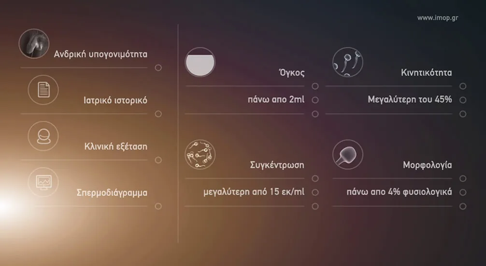
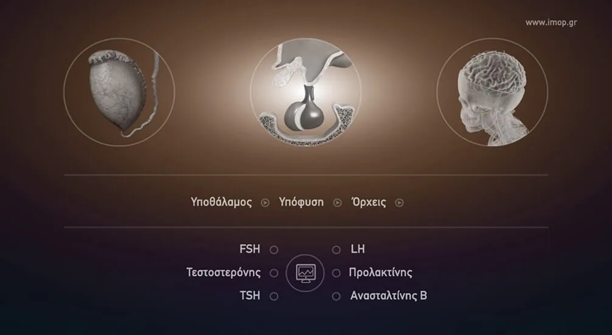
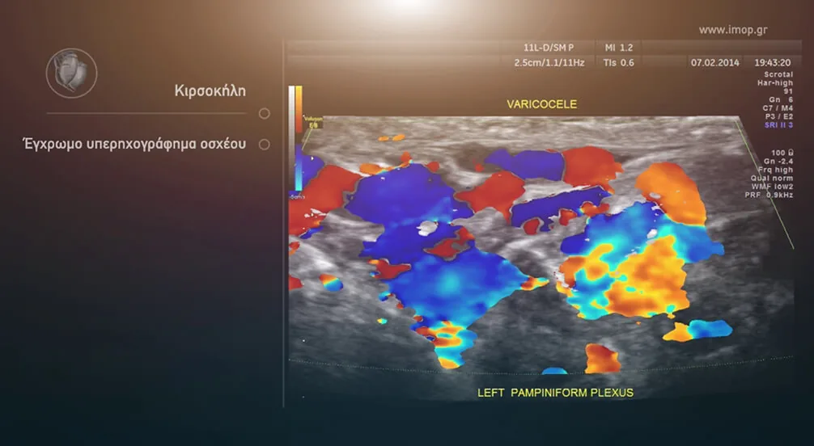
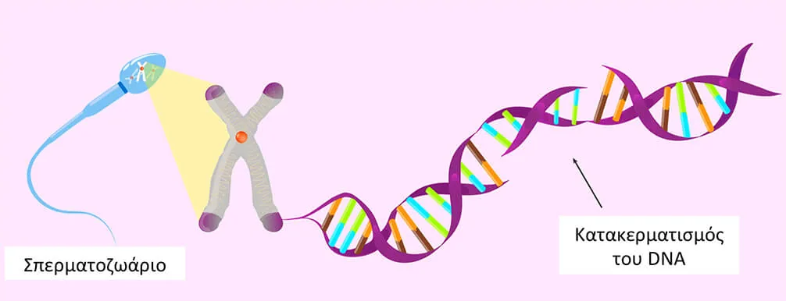
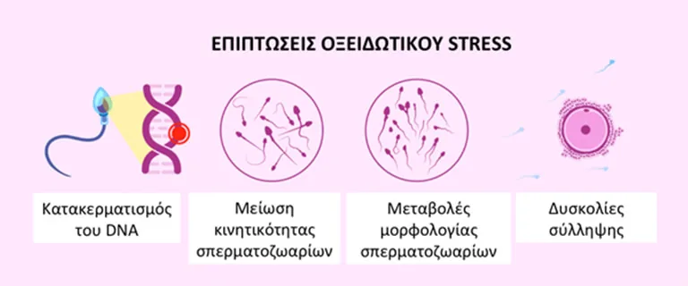

Διαγνωστικός έλεγχος
Δυστυχώς η συντριπτική πλειονότητα των ανδρών με κιρσοκήλη δεν έχουν κανένα σύμπτωμα και το πρόβλημα αναγνωρίζεται μόνο από την αδυναμία τεκνοποίησης. Μόνο ένα μικρό ποσοστό ανδρών βάρος στο όσχεο, που επιδεινώνεται από αυξημένη δραστηριότητα, παρατεταμένη ορθοστασία ή άθληση.

Ο διαγνωστικός έλεγχος περιλαμβάνει το ιστορικό, την κλινική εξέταση, και 2 σπερμοδιαγράμματα. Εφ’ όσον υπάρχει πρόβλημα, επαναλαμβάνεται το σπερμοδιάγραμμα και αν επιβεβαιωθεί ακολουθεί ορμονολογικός έλεγχος (μέτρηση των ορμονών FSH, LH, τεστοστερόνης και προλακτίνης).

Ο απεικονιστικός έλεγχος περιλαμβάνει το υπερηχογράφημα όρχεων και triplex αγγείων όρχεων.
Κλινική εξέταση και βαθμοί κιρσοκήλης
Η διάγνωση βασίζεται κυρίως στη φυσική εξέταση του ιατρού, η οποία συχνά χαρακτηρίζεται από την περιγραφή ενός «σάκου με σκουλήκια» κατά την ψηλάφηση. Η κιρσοκήλη ταξινομείται με βάση τη βαρύτητα που παρατηρείται κατά τη διάρκεια της φυσικής εξέτασης, και ταξινομείται σε βαθμούς.
Ψηλαφητή, αναγνωρίζεται με την αύξηση της ενδοκοιλιακής πίεσης (δοκιμασία Valsalva)
Ψηλαφητή, αναγνωρίζεται σε όρθια θέση από την πλήρωση των φλεβών με αίμα λόγω της βαρύτητας
Μεγάλη κιρσοκήλη που αναγνωρίζεται σε όρθια θέση και μόνο με την όραση (επισκόπηση οσχέου)
Triplex αγγείων όρχεων
Οι οδηγίες της Ευρωπαϊκής Ουρολογικής Εταιρείας (EAU) συνιστούν τη χρήση triplex για την παροχή πρόσθετων πληροφοριών και τη βοήθεια στη διαφοροποίηση των ακτινολογικά σημαντικών κιρσοκήλων.

Ο ειδικός υπέρηχος θα αποτυπώσει κάθε παθολογία στους όρχεις. Το δε triplex των αγγείων θα θέσει την διάγνωση και τη βαρύτητα της κιρσοκήλης. Έχουν περιγραφεί διάφορες ταξινομήσεις της κιρσοκήλης για τον χαρακτηρισμό τόσο του βαθμού της κιρσοκήλης όσο και του βαθμού της παλινδρόμησης που είναι καθοριστικός στην έγκαιρη χειρουργική αντιμετώπιση της πάθησης.

Σπερμοδιάγραμμα
Η ανάλυση σπέρματος ή σπερμοδιάγραμμα ελέγχει τις παραμέτρους του σπέρματος και προσδιορίζει μεταξύ άλλων, τον αριθμό, την κινητικότητα και τη μορφολογία των σπερματοζωαρίων. Αποτελεί την “ταυτότητα” της γονιμότητας ενός άνδρα και παρέχει πολύτιμες πληροφορίες. Για να είναι αξιόπιστη η ανάλυση σπέρματος, είναι σημαντικό ο άνδρας που θα δώσει δείγμα στο εργαστήριο.
Σύμφωνα με τον Παγκόσμιο Οργανισμό Υγείας ενα σπέρμα έχει υψηλές πιθανότητες να γονιμοποιήσει το ωάριο με την σεξουαλική επαφή όταν έχει ικανό αριθμό και κινητικότητα σπερματοζωαρίων και καλή μορφολογία:
πάνω 10 εκατ. σπερματοζωάρια ανά ml και περισσότερα από 39 εκατ. στο σύνολο
32% των σπερματοζωαρίων έχει προωθητική κινητικότητα, ώστε να μπορέσουν τα σπερματοζωάρια να φτάσουν στο ωάριο. Η προωθητική κινητικότητα των σπερματοζωαρίων μπορεί να είναι ζωηρή ή νωθρή.
ένα δείγμα σπέρματος είναι φυσιολογικό όταν >4% των σπερματοζωαρίων έχουν φυσιολογική μορφολογία.
Συγχρόνως με το σπερμοδιάγραμμα μπορει να γινουν και άλλες εξετάσεις όπως:
- οι βιοχημικές εξετάσεις σπέρματος
- ο έλεγχος του DNA των σπερματοζωαρίων (κατακερματισμός του DNA)
- ο έλεγχος του ακροσώματος του σπερματοζωαρίου
- η εκτίμηση οξειδωτικού stress
Επίσης, οι λοιμώξεις του ανδρικού αναπαραγωγικού συστήματος μπορούν να διαγνωσθούν τόσο από την παρουσία λευκών αιμοσφαιρίων στο σπέρμα όσο και από την καλλιέργεια δείγματος σπέρματος. Ο έλεγχος αυτός είναι πολύ σημαντικός, ιδιαίτερα σε άνδρες με ιστορικό κάποιας λοίμωξης του γεννητικού συστήματος.
Κατακερματισμός του DNA
Ο κατακερματισμός του DNA είναι ο διαχωρισμός ή το σπάσιμο των κλώνων του DNA σε κομμάτια. Μπορεί να μετρηθεί σε εξειδικευμένα εργαστήρια και η κύρια μονάδα μέτρησής του είναι ο Δείκτης Κατακερματισμού DNA (DFI).
Ένα DFI 20% ή περισσότερο μειώνει σημαντικά τα ποσοστά επιτυχίας ακόμη και εξωσωματικής.
Ο κατακερματισμός του DNA του σπέρματος (SDF) έχει δυσμενείς επιπτώσεις τόσο στην διαδικασία σύλληψης, όσο και στην έκβαση των τεχνικών υποβοηθούμενης αναπαραγωγής (μειωμένα ποσοστά γονιμοποίησης και κλινικής εγκυμοσύνης). Κλασσική αιτιολογία αποτελεί το αυξημένο οξειδωτικό stress.

Oξειδωτικό stress
To οξειδωτικό stress παίζει σημαντικό ρόλο στην αιτιολογία της ανδρικής υπογονιμότητας. Στο ανθρώπινο σπέρμα, το οξειδωτικό stress προκύπτει από μια ομοιοστατική ανισορροπία μεταξύ της παραγωγής μορφών οξυγόνου (ROS), όπως οι ελεύθερες ρίζες και της συνολικής αντιοξειδωτικής ικανότητας να τα εξουδετερώνει. Έως και το 50% όλων των περιπτώσεων ανδρικής υπογονιμότητας κατηγοριοποιούνται ως ιδιοπαθείς και το οξειδωτικό stress είναι παρόν σε έως και 80% τέτοιων ασθενών.

Εκτός από την ιδιοπαθή στειρότητα, παθολογίες όπως η ουρολοίμωξη, η χρόνια προστατίτιδα, η κιρσοκήλη, η συστροφή των όρχεων και η κρυψορχία αποτελούν αιτίες οξειδωτικού στρες του σπέρματος. Το οξειδωτικό στρες παρεμβαίνει σε διάφορες κρίσιμες λειτουργίες του σπέρματος και επηρεάζει τη δυνατότητα του σπέρματος να γονιμοποιήσει επιτυχώς ένα ωάριο και να δημιουργήσει ένα έμβρυο καλής ποιότητας. Η ανδρική υπογονιμότητα λόγω οξειδωτικού stress είναι μια θεραπεύσιμη κατάσταση. Το πλέον τεκμηριωμένο τεστ οξειδωτικού στρες υψηλής ευαισθησίας/εξειδίκευσης είναι το MiOXSYS® που γίνεται σε εξειδικευμένα Ανδρολογικά εργαστήρια.